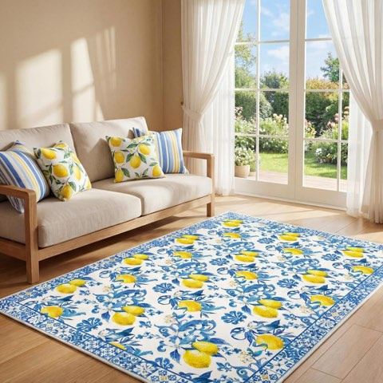
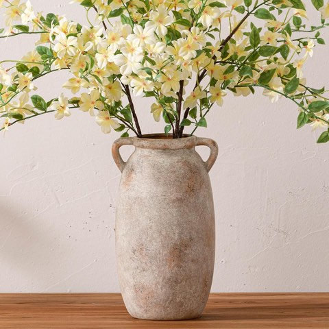
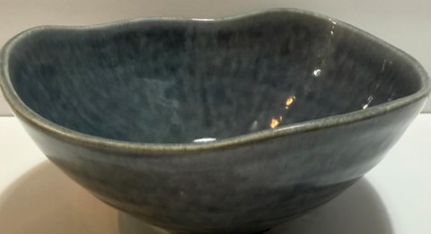
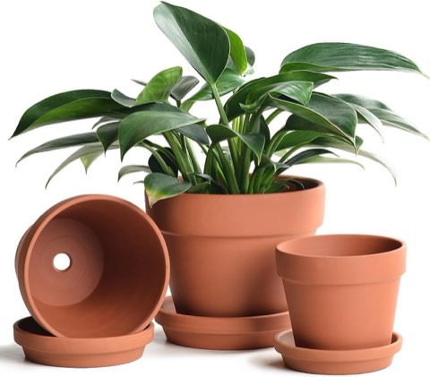
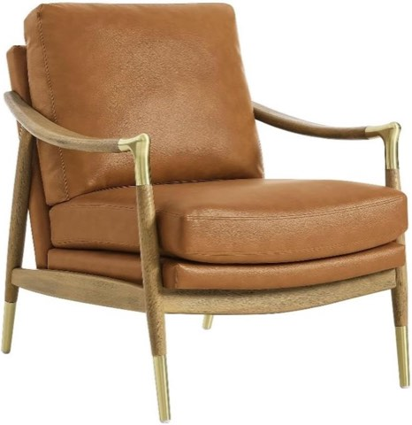
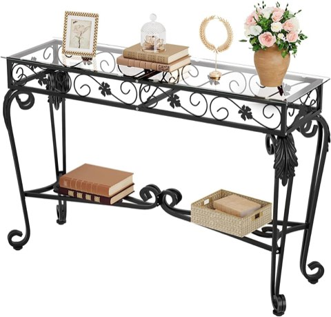
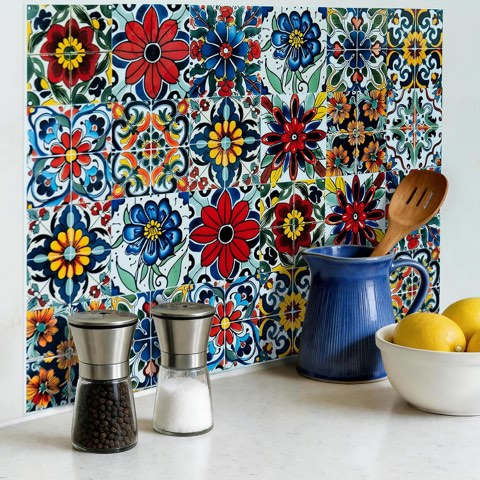
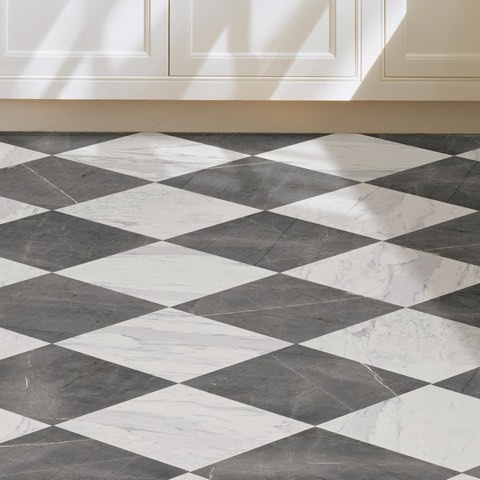
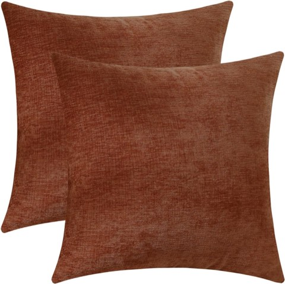

Modern Spanish interior design carries a genuine whole-home logic, not just a bathroom or kitchen treatment.
The same warm materials and restrained styling that work well in one room should carry through the rest of the entire house for the look to actually read as a coherent style, not a single styled corner.


SATINIOR 5 x 7 Ft Lemon Area Rug, Blue and Yellow Mediterranean Style, Non-Slip
Shop on Amazon
Dobbyby 12 Inch Tall Ceramic Flower Vase, Rustic Terracotta Farmhouse Pottery
Shop on AmazonKeep It Simple and Intentional
Fewer, better-chosen pieces throughout the home outperform a fully decorated house trying to include every element of the style at once.
This restraint is the thread that ties every other choice on this list together into one coherent whole-home style.


Handmade Ceramic Decorative Bowl, Blue-Gray Glaze, Organic Shape, Footed Base
Shop on AmazonLet Plants Carry the Mediterranean Mood
Indoor plants throughout the home extend the style's outdoor connection into every room, not just one.
This is one of the lowest-cost, highest-consistency ways to carry the look from room to room.


INGOFIN Terracotta Pots Set with Saucers, 5, 6 and 7 Inch, Drainage Holes
Shop on AmazonAdd Vintage Touches Without the Dust
A genuinely aged piece, a vintage rug, an antique mirror, a weathered side table, brings real character that new furniture alone can't provide.
This doesn't require an entirely vintage-furnished home; one or two considered pieces per room do the job.

Light It Moodier Than Usual
Warm, slightly dim ambient lighting throughout the home, rather than bright and even, supports the style's relaxed Mediterranean feel.
This is a whole-home lighting philosophy, not just a single-room choice, consistency here matters as much as the palette does.

Linkind Smart Light Bulbs, Works with Alexa and Google Home, Dimmable
Shop on AmazonChoose Furniture That's Low-Key but Luxe
Simple silhouettes in genuinely good materials read as more sophisticated than ornate furniture in lesser materials.
This furniture philosophy carries the restraint-over-ornamentation principle central to the whole style into the biggest pieces in any room.



Modway Langford Faux Leather Upholstered Mid-Century Modern Armchair with Wood Frame
Shop on AmazonBring In Wrought Iron and Curves
Wrought iron fixtures and furniture with genuine curves bring an authentically Spanish architectural detail into the home that straight-lined modern furniture can't replicate.
This works especially well in railings, light fixtures, and a few key furniture pieces rather than attempting it everywhere at once.


HavenlyYouth 47.2 Inch Vintage Console Table with Tempered Glass Top and Metal Frame
Shop on AmazonUse Statement Tile With Restraint
One bold tile moment, a kitchen backsplash, an entryway floor, makes a real statement; several competing tile moments throughout the home dilute each other.
Choosing just one or two rooms for a genuine tile statement keeps the whole home feeling considered rather than overdone.


Peel and Stick Tile Stickers, 24 Pcs, 4 x 4 Inch, Mexican Talavera Backsplash
Shop on Amazon
FloorPops x Chris Loves Julia Bonneville Grey and White Marble Peel and Stick Floor Tiles
Shop on AmazonUse Natural Materials Everywhere
Stone, wood, rattan, and other genuine materials should show up throughout the home, not concentrated in just one statement room.
This consistency across spaces is more important to the style's success than any single material choice in isolation.

Start With an Earthy Palette
Warm terracottas, sandy neutrals, and deep olive or rust accents form the base the rest of the home gets built on.
Carrying this palette consistently from room to room, rather than confined to just one space, is what makes the whole home read as intentionally styled.


Jeneoo Terracotta Chenille Decorative Throw Pillow Covers, Soft Square Cushion Cases
Shop on AmazonFinal Thoughts
None of these 9 elements need to be applied to every room immediately.
Start with the palette and materials, since both carry most easily across the whole home, then layer in furniture, lighting, and vintage touches room by room.
A modern Spanish home reads as genuinely coherent when the same restraint and warmth show up consistently throughout, not when any single room gets all the attention.